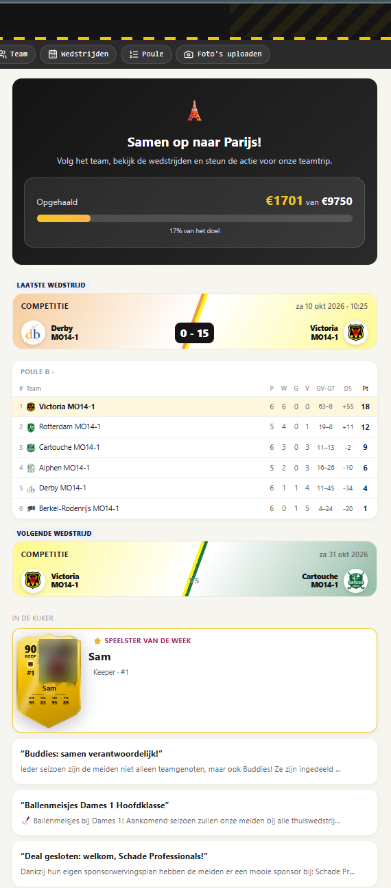
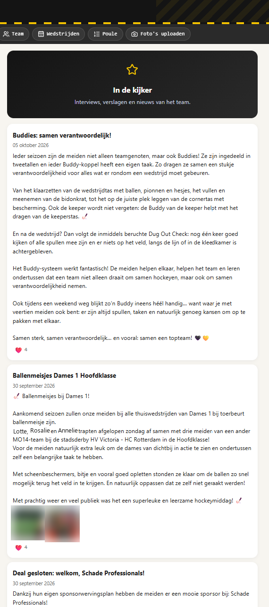
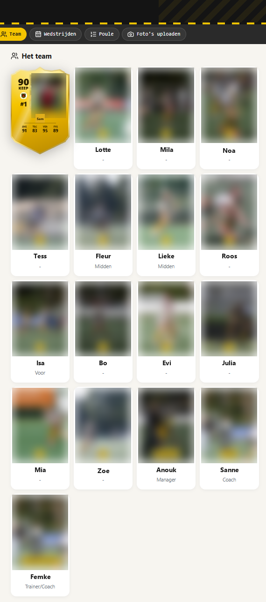
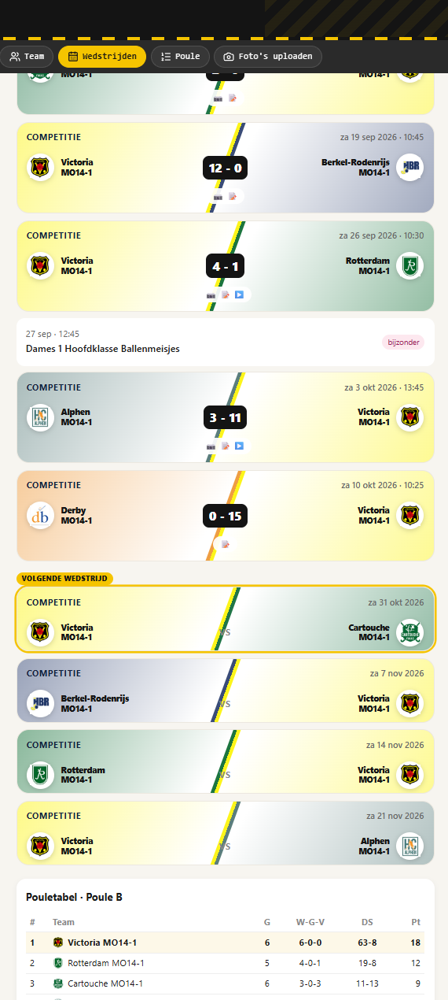
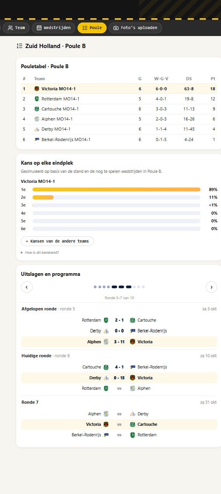
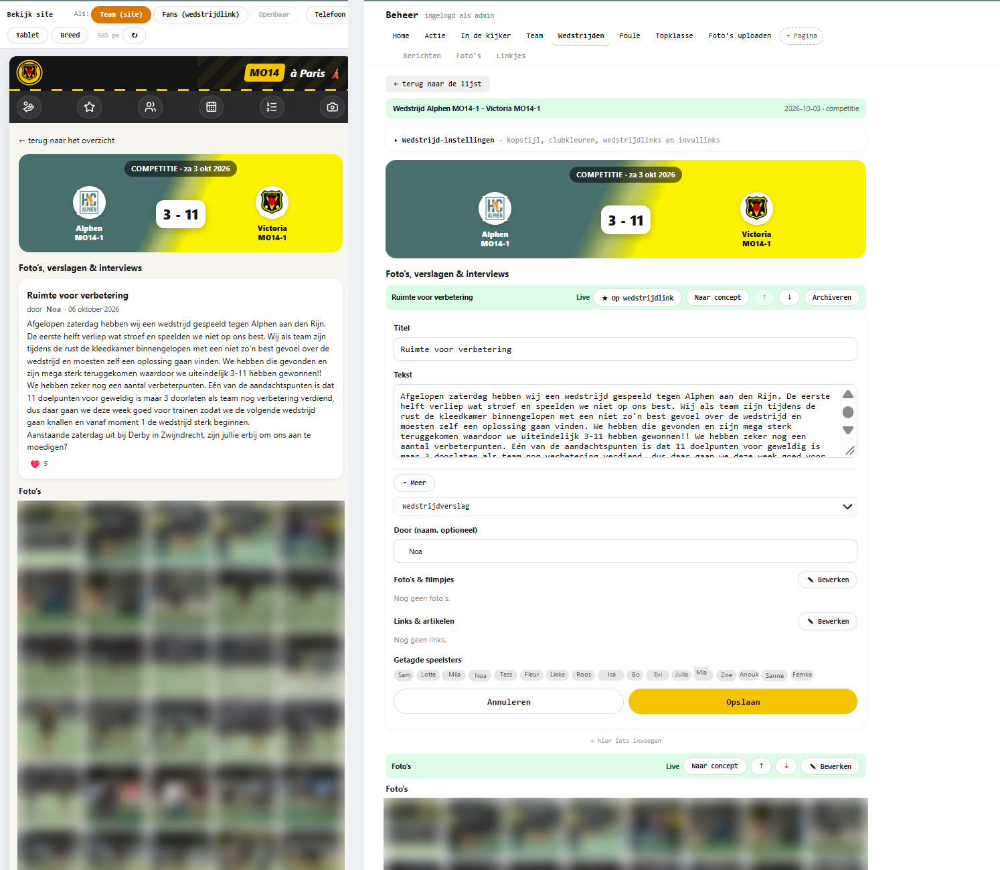
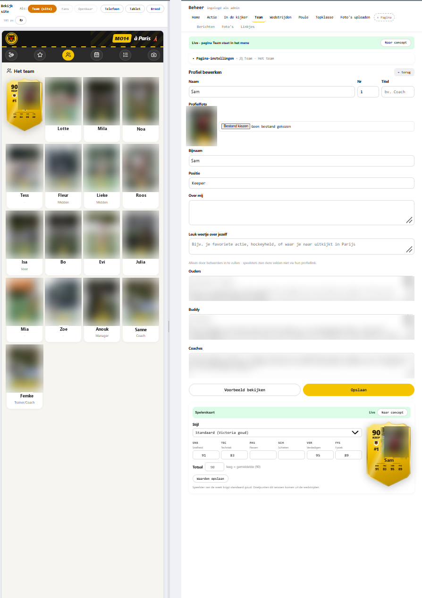

YearOf: een eigen website voor jouw hockeyteam, voor het hele seizoen
Wedstrijden in clubkleuren, foto's en verslagen, spelerskaarten, de stand van je poule - samengebracht op één plek voor speelsters, ouders en fans. Begonnen als de site van één meidenteam op weg naar Parijs, nu in ontwikkeling als platform voor elk team.
Wat er nu al kan
Dit draait vandaag al op de site van een MO14-team en is de basis voor elke nieuwe teamsite.
Wedstrijden in clubkleuren
Elke wedstrijd als kaart in de kleuren van beide clubs, met uitslag of aanvangstijd. Automatisch bijgewerkt vanuit de officiële competitiegegevens.
Stand en programma
Pouletabel, uitslagen per ronde, kans per eindplek en wat de herindeling kan betekenen.
Spelerskaarten
Een eigen kaart per speelster in FIFA-stijl, met foto en waarden. De beheerder bepaalt wat erop staat en wanneer hij zichtbaar is.
Foto's en verslagen
Ouders uploaden foto's en schrijven verslagen via een eigen link; de beheerder zet ze klaar en publiceert.
Doelpunten en speelster van de week
Wie scoorde er, en wie staat deze week in de schijnwerpers.
Links voor fans
Opa, oma en vrienden kijken mee via een eigen link voor één wedstrijd of één speelster - zonder de rest van de site.
Actie en sponsors
Een inzamelactie met thermometer en een plek voor sponsors van het team.
Beheer zoals je de site ziet
Links de site zoals bezoekers hem zien, rechts bewerken - in het blok zelf, met live of concept per onderdeel.
Zo ziet het eruit
Schermen van de huidige MO14-site, zoals ouders en fans hem op hun telefoon zien. Klik op een scherm om het groot te bekijken.





Zo beheer je het
De studio in teambeheer: links de site precies zoals bezoekers hem zien, rechts bewerk je - zonder te programmeren.

Links de site zoals bezoekers hem zien, rechts bewerken - hier een wedstrijdverslag, direct in het blok, met live of concept en de volgorde op de pagina.

Profiel, teksten van ouders, buddy en coaches, en de spelerskaart met stijl en waarden - met meteen een voorbeeld van de kaart.
Namen zijn gewijzigd en foto's vervaagd ter bescherming van de speelsters.
Wie ziet wat
Eén simpele regel: je ziet alles van jouw niveau en alles daaronder.
Privacy en veiligheid
Het gaat om jeugdteams. Daarom zijn dit vaste uitgangspunten, in elke fase:
Alleen met een link of inlog
Een teamsite is niet zomaar vindbaar. Wat openbaar is, kies je zelf.
Teams volledig gescheiden
Elk team heeft zijn eigen opslag. Een link van het ene team geeft nooit toegang tot een ander team.
Accounts voor ouders
Inloggen is voor beheerders en ouders, niet voor de speelsters zelf.
Koppelen deelt geen gegevens
Gekoppelde teams zien alleen naam, logo en de stand - nooit speelsters, foto's of berichten.
Jouw seizoen, jouw data
Een teamsite is als geheel te exporteren en te bewaren.
Van één teamsite naar een platform
In acht fases groeit YearOf van de site van één team naar een platform waarop elk team zijn eigen site maakt, beheert en koppelt. De planning is indicatief; de volgorde staat vast.
Veilig fundament
In ontwikkelingEerst de basis op orde: alles wat een teamsite deelt, moet goed afgeschermd zijn.
Wat gebeurt er
- Links en codes alleen nog bruikbaar waarvoor ze bedoeld zijn
- Foto's toevoegen alleen met een geldige teamlink of uitnodiging
- Automatische tests die bewaken dat dat zo blijft
Wat merk je ervan
- Een nieuwe teamlink voor ouders en speelsters
- Verder niets - en dat is precies de bedoeling
Eén inlog, ook met Google en Microsoft
In ontwikkelingBeheerders en teammanagers loggen in met het account dat ze al hebben.
Wat gebeurt er
- Inloggen met Google of Microsoft (ook Hotmail en Outlook)
- Eén account voor alle teamsites waar je toegang toe hebt
- Nieuwe beheerders komen binnen via een uitnodiging
Wat merk je ervan
- Geen extra wachtwoord om te onthouden
- Tweestapsverificatie via je eigen Google- of Microsoft-account
Een eigen omgeving voor hockey
GeplandAlles wat met hockey te maken heeft, krijgt een eigen, opgeruimde plek - los van andere toepassingen.
Wat gebeurt er
- Een eigen hockeyplatform: teamsites, competitiegegevens en het poule-overzicht
- Oude, niet meer gebruikte hockeytoepassingen gaan als alleen-lezen archief online
- Inloggen via één centrale inlogplek
Wat merk je ervan
- Niets bijzonders - alles blijft werken
- Op de achtergrond: sneller, beter beheersbaar, makkelijker uit te breiden
Meerdere teamsites
GeplandElk team krijgt zijn eigen site: eigen speelsters, foto's, kleuren en adres.
Wat gebeurt er
- Een teamsite per team per seizoen
- Eigen adres: een pad, een eigen subdomein of zelfs een eigen domeinnaam
- Eigen uiterlijk: clubkleuren, logo en titel
- Meerdere competities per seizoen (bijvoorbeeld najaar, voorjaar, eindrondes)
- Volledig gescheiden: een link van het ene team geeft nooit toegang tot een ander team
Wat merk je ervan
- Een nieuwe teamsite staat klaar zonder technische ingreep
- Beginnen vanuit een sjabloon van een andere site
Zaalseizoen live, met teambeheer
GeplandDe eerste nieuwe teamsites gaan live voor het zaalhockeyseizoen, beheerd door de teammanagers zelf.
Wat gebeurt er
- Teambeheer: één beheerwebsite waar managers alleen hun eigen site(s) zien
- Nieuwe site aanmaken met een stappenplan
- Sites aan elkaar koppelen: het veldteam toont de stand van zijn zaalteams
- WhatsApp-berichten voorbereiden: weekbericht en uitslag kant-en-klaar om te delen
Wat merk je ervan
- Managers beheren hun eigen team, zonder tussenkomst
- Fans zien het hele seizoen, veld en zaal
Je site zelf samenstellen
VerkenningElke pagina bouw je op uit onderdelen die je zelf kiest, in de volgorde die je wilt.
Wat gebeurt er
- Een catalogus van onderdelen: stand, wedstrijden, foto's, spelerskaarten, sponsors, tekst ...
- Per onderdeel instellingen, zichtbaarheid en live of concept
- Pagina's als sjabloon voor elke wedstrijd en elke speelster
- Mogelijk slepen en neerzetten in een visuele editor
- Automatische schema's voor team, ouders en coaches (rijden, wassen, fruit, zaaldienst ...)
Wat merk je ervan
- Een site die past bij jouw team, zonder programmeren
- Verbeteringen aan onderdelen komen automatisch op alle sites
Wie ziet wat, en inloggen voor ouders
VerkenningElke foto en elk bericht krijgt een niveau: voor wie is dit bedoeld?
Wat gebeurt er
- Vier niveaus: beheerder, team, fans en openbaar
- Per foto en bericht kiezen voor wie het is, ook per plek op de site
- Ouders kunnen inloggen in plaats van een link te gebruiken
Wat merk je ervan
- Teamfoto's blijven binnen het team, de mooiste actiefoto's mogen naar de fans
- Duidelijk en voorspelbaar wat iedereen ziet
Netwerk, archief en eigen hosting
VerkenningTeamsites worden een netwerk, en een site gaat mee waar jij wilt.
Wat gebeurt er
- Vriendenteams: sites van andere teams of clubs koppelen (alleen na wederzijds akkoord)
- "Ook op YearOf" bij een wedstrijd tegen een vriendenteam
- Een seizoen exporteren en bewaren als archief - later terug te zetten
- Een teamsite onder je eigen domein, of zelf hosten op eigen servers
Wat merk je ervan
- Een levend netwerk van teams, zonder dat er iets van speelsters gedeeld wordt
- Je seizoen blijft van jou
Team-organisatie: minder regelwerk
Naast de site zelf neemt YearOf het terugkerende regelwerk rond een team uit handen. Nieuw op de roadmap:
Automatische schema's
Uit het wedstrijdprogramma maakt YearOf zelf de schema's, eerlijk verdeeld over het seizoen.
- Ouders: rijden naar uitwedstrijden, shirts wassen, fruit, bardienst of zaaldienst
- Team: wie neemt de bal en het materiaal mee, aanvoerdersband, opstellen en opruimen
- Coaches: wie coacht, wie fluit, wie is teammanager van dienst
- Ruilen met één klik, met een herinnering een paar dagen vooraf
- Iedereen ziet alleen zijn eigen beurten, en het schema op de teampagina
WhatsApp-berichten voorbereiden
De vaste berichten in de team- en oudergroepen staan kant-en-klaar klaar - kopiëren of direct delen via WhatsApp.
- Weekbericht: tegenstander, tijd, verzamelen, adres met kaart, wie rijdt, wie wast
- Na de wedstrijd: uitslag, doelpuntenmakers en de link voor fans
- Nieuwe foto's of verslag: korte melding met link
- Per groep een eigen variant: team, ouders, vrienden
Hoeveel tijd kost het een manager?
Een inschatting op basis van het bijhouden van de MO14-site. Hoeveel tijd het kost, hangt vooral af van hoe uitgebreid je het wilt maken - de basis is licht.
| Wat | Wanneer | Tijd |
|---|---|---|
| Uitslag, stand, programma en wedstrijdkaarten | doorlopend | automatisch |
| Weekbericht voor de WhatsApp-groepen delen (vanaf fase 4 kant-en-klaar) | elke week | 2 min |
| Nieuwe teamlink delen in de oudergroep | elke week | 1 min |
| Link voor fans maken en delen | per wedstrijd | 1 min |
| Foto's goedkeuren die ouders hebben toegevoegd | per wedstrijd | 5 - 15 min |
| Verslag of interview: uitnodiging sturen en publiceren | per wedstrijd (optioneel) | 3 - 6 min |
| Doelpunten invullen | per wedstrijd | 2 min |
| Speelster van de week / spelerskaarten bijwerken | per week (optioneel) | 2 - 5 min |
| Per wedstrijdweek | 15 - 30 min | |
| Site aanmaken vanuit een sjabloon, kleuren en logo | start seizoen | 15 - 30 min |
| Speelsters toevoegen; profielen vullen ze zelf in via een eigen link | start seizoen | 30 - 60 min |
| Sponsors, actie en schema-instellingen | start seizoen | 20 - 30 min |
| Seizoen afsluiten en archiveren | einde seizoen | 10 min |
Wat het licht houdt: de competitiegegevens komen automatisch, ouders en speelsters leveren foto's, verslagen en profielen zelf aan via een eigen link, een nieuwe site start vanuit een sjabloon, en vanaf fase 4 en 5 staan berichten en schema's klaar. Meerdere managers per team kunnen het werk verdelen.
Veelgestelde vragen
Voor welke teams is YearOf bedoeld?
Voor hockeyteams die hun seizoen willen delen met speelsters, ouders en fans - begonnen bij jeugdteams, maar niet daartoe beperkt. Competitiegegevens komen automatisch mee voor teams in de Nederlandse competities.
Hoeveel tijd kost het bijhouden?
Ongeveer 15 tot 30 minuten per wedstrijdweek, of zo'n 10 minuten in een lichte variant. Daarbij komt eenmalig 1,5 tot 2 uur bij de start van het seizoen. Zie Hoeveel tijd kost het.
Hebben we technische kennis nodig?
Nee. Een teamsite wordt aangemaakt en ingericht via de beheerwebsite; daarna beheer je alles zoals je de site ziet.
Kan het onder onze eigen naam of domein?
Ja, vanaf fase 3 kan een teamsite een eigen adres of een eigen domeinnaam krijgen, met de kleuren en het logo van jullie club.
Wat gebeurt er met onze site na het seizoen?
De site gaat in het archief en blijft terug te kijken. Vanaf fase 7 kun je een seizoen ook exporteren en zelf bewaren.
Kunnen we de site zelf hosten?
Dat onderzoeken we in fase 7. Tot die tijd draait elke teamsite op ons platform, eventueel onder je eigen domein.